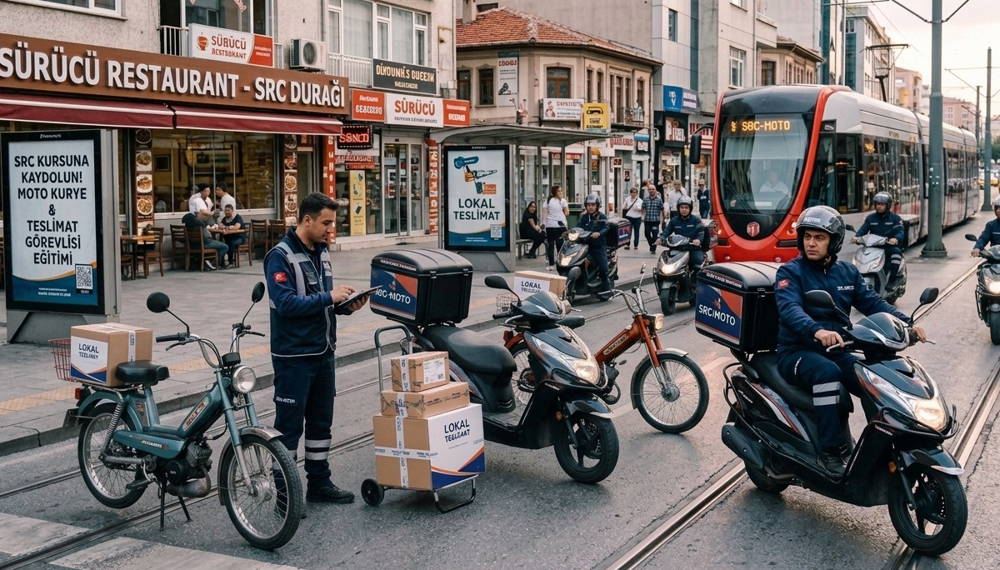

SRC Kurye Belgesi Nedir?
SRC Kurye belgesi, motosiklet veya moped ile ticari amaçlı kurye ve kargo taşımacılığı yapan sürücülerin alması gereken Mesleki Yeterlilik Belgesidir. Karayolu Taşıma Yönetmeliği'nde 2026 yılı başında yapılan düzenlemeyle yürürlüğe girmiştir.
Belge, geleneksel SRC belgelerinin kurye sektörüne özgü uyarlamasıdır. Eğitim süresi diğer SRC türlerine kıyasla daha kısa tutulmuş, uygulama sınavı kaldırılarak yalnızca teorik e-sınav şartı getirilmiştir.

Kimler SRC Kurye Belgesi Almak Zorunda?
- Motosiklet ile ticari kurye ve kargo taşımacılığı yapanlar
- Moped ile paket, yemek veya kargo taşıyanlar
- Kurye platformlarında (Getir, Yemeksepeti, Trendyol Go vb.) kayıtlı çalışanlar
- Kendi adına bağımsız kurye hizmeti verenler
- Kargo şirketlerinde motosikletle teslimat yapan sürücüler

SRC Kurye Eğitimi Nasıl İşler?
SRC Kurye eğitimi 25 saatlik teorik eğitimden oluşmaktadır. Eğitim içeriği; trafik mevzuatı, yük ve paket taşıma kuralları, kişisel güvenlik, mesleki sorumluluklar ve kaza önleme tekniklerini kapsar.
Eğitim tamamlandıktan sonra MEB'in belirlediği tarihlerde e-sınava girilir. Sınav 60 üzeri puan ile geçilir. Uygulama sınavı bulunmamaktadır.
SRC Kurye Belgesi Alma Şartları
- Geçerli sürücü belgesine sahip olmak (A veya A1 sınıfı)
- En az ilkokul mezunu olmak
- 25 saatlik SRC Kurye eğitimini tamamlamak
- MEB e-sınavında 60 ve üzeri puan almak
Gerekli Evraklar
- 2 adet biyometrik fotoğraf
- Nüfus cüzdanı fotokopisi
- Sürücü belgesi fotokopisi
- Öğrenim belgesi fotokopisi (e-devletten alınabilir)
Sigorta ve Hukuki Boyut
SRC Kurye belgesi olmaksızın kaza yapılması durumunda sigorta şirketleri "yetersiz mesleki yeterlilik" gerekçesiyle hasar ödemesini reddedebilir veya ödediği tazminatı sürücüden rücu edebilir. Bu risk, belge maliyetinin çok üzerindedir.
Kurye platformları da yakın vadede SRC Kurye belgesi olmayan sürücüleri sistemden çıkarmaya başlayabilir. Şimdiden belgenizi alarak kesintisiz çalışmaya devam edin.
Ankara'da Kayıt İçin
SRC Kurye eğitimlerimiz Ankara merkezde yürütülmektedir. Hafta içi ve hafta sonu program seçenekleri mevcuttur. Kayıt ve program detayları için hemen arayın.